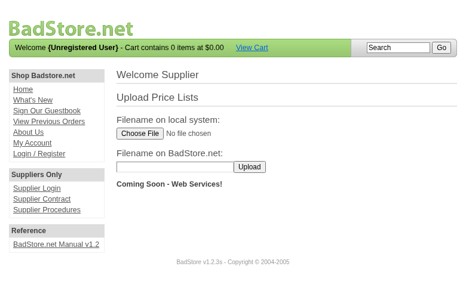

Scope
OpenHack Security Agent was engaged by
Richard Roe to conduct an external IT security
investigation. The subject of the investigation was the “BadStore.net
v1.2.3s”.
The test was performed using a local instance of the application at
http://localhost:3336 in a dedicated test environment..
Objective
The objective of the IT security investigation was to identify vulnerabilities and security gaps which, in the event of misuse, would have an impact on the availability, integrity and confidentiality of the defined applications and/or systems and the data processed on them. The result of this project is a report that contains a management summary of all relevant findings and a compilation of recommended measures.
The technical IT security audit is not a substantive audit effort to ensure that all vulnerabilities and security gaps existing at the time of the audit are identified. There is a possibility that established safeguards will effectively prevent identification and exploitation of vulnerabilities and security gaps. The client acknowledges that this is not an indicator of deficiencies in engagement performance and that additional unidentified vulnerabilities and security gaps may exist.
Document Status
| Title | Security Assessment Report |
| Document Owner | OpenHack Security Agent |
| Classification | Strictly Confidential |
| Project Timeframe | 2026-02-26 |
Version History
| Version | Date | State | Author | Comments |
|---|---|---|---|---|
| 0.1 | 2026-02-26 | Draft | Jane Doe | – |
| 1.0 | 2026-02-26 | Final document | Jane Doe | – |
Contact Persons - Assessor
| Name | Role | Phone | |
|---|---|---|---|
| Jane Doe | Lead Security Consultant | +1 555 123 4567 | jane.doe@openhack.sec |
| John Smith | Security Consultant | +1 555 234 5678 | john.smith@openhack.sec |
Contact Persons - Client
| Name | Role | Phone | |
|---|---|---|---|
| Richard Roe | Project Lead | +1 555 345 6789 | spam@badstore.net |
OpenHack Security Agent (hereinafter referred to as
“ASSESSOR”) has been commissioned by Richard Roe
(hereinafter referred to as “CLIENT”) to carry out a penetration
test.
The penetration test of the BadStore.net v1.2.3s
application took place on 2026-02-26.
For this purpose, the web application, accessible at
http://badstore:80, was tested from the perspective of an
external attacker.
As part of the test, a total of 10 vulnerabilities were identified: 6 critical, 2 high, 2 medium, 0 low, and 0 informational.
Critical: 6 | High: 2 | Medium: 2 | Low: 0 | Informational: 0 | Total: 10
| Severity | Count | ||
|---|---|---|
| 6 | ||
| 2 | ||
| 2 | ||
| 0 | ||
| 0 | ||
| Total | 10 | |
A description of the scope and test environment can be found in Chapter 3. Chapter 4 presents the risk assessment methodology. Chapter 5 provides a summary of findings. Chapter 6 contains the detailed technical descriptions of the findings including remediation measures.
It is recommended that the remediation of the critical risk vulnerabilities be treated with the highest priority and countermeasures implemented as soon as possible. The vulnerabilities with high and medium risk should also be remedied in the short term. The low-risk vulnerabilities should be treated with lower priority due to their reduced risk, but should still be addressed.
The scope for the assessment was the following targets:
The security penetration test of the BadStore.net v1.2.3s took place on 2026-02-26.
The web application was tested for security vulnerabilities across the following categories. This can be considered a guideline as penetration tests are a creative process and therefore the tests are not limited to what is given here. The base of these categories is the OWASP Top 10 for Web, which is fully covered by this penetration test approach.
| Category | Description |
|---|---|
| Broken Access Control | Users can act outside their permissions, leading to unauthorized viewing, modification, or deletion of data. |
| Security Misconfiguration | Systems or cloud services are insecurely configured, e.g., through default passwords or unnecessarily enabled features. |
| Software Supply Chain Failures | Vulnerabilities arise from compromised third-party code, libraries, or build pipelines. |
| Cryptographic Failures | Sensitive data is exposed through missing, weak, or incorrectly implemented encryption. |
| Injection | Attackers inject malicious commands (e.g., SQL or shell code) through input fields that the system erroneously executes. |
| Insecure Design | Fundamental architectural flaws that exist before implementation make an application inherently insecure. |
| Authentication Failures | Flaws in identity verification allow attackers to take over sessions or guess passwords (brute force). |
| Software or Data Integrity Failures | Lack of verification of code or data sources leads to acceptance of untrusted updates or serialization data. |
| Security Logging & Alerting Failures | Attacks go undetected or responses are delayed due to missing logs or absent alert notifications. |
| Mishandling of Exceptional Conditions | Programs respond inadequately to unforeseen situations, which can lead to crashes or logic errors. |
During the test, the following restrictions or events occurred that may have affected the scope or depth of the assessment:
The risk assessment of the vulnerabilities found is performed using the industry standard Common Vulnerability Scoring System v3.1 (hereinafter referred to as “CVSS”). This is a standard that can be used to uniformly assess the vulnerability of computer systems and the severity of security vulnerabilities. This makes it possible to compare vulnerabilities more effectively.
The Common Vulnerability Scoring System has a metric structure and is based on values that are divided into three groups: “Base”, “Temporal”, and “Environmental”. To determine the vulnerability scores, each group has its own rules. The values of the Base group are invariant in time and remain the same in different environments. In the Temporal group, the time dependency of a vulnerability is taken into account. For example, the vulnerability of a system to a particular vulnerability decreases over time as more and more countermeasures such as patches become known and available. The Environmental group incorporates various criteria of the specific IT environments into the vulnerability rating.
The CVSS ratings are numerical values on a scale of 0.0 to 10.0, with the highest vulnerability of a system occurring at a value of 10.0. Our rating is based on the Base Metrics (Base Score) and is composed of:
As penetration testers, we can only assess the general threats posed by a vulnerability through Base Metrics. However, we have no insight into the internal structures of our clients. Therefore, the assessment of the specific risks for the client’s systems and business processes must be done by the client. For this purpose, CVSS offers Environmental Metrics. This makes it possible to subsequently adjust the CVSS score of vulnerabilities after the test result has been submitted before they are remedied. This changes the assessment of the risk and thus the urgency of remediation of a vulnerability. For more information, see CVSS v3.1 Specification.
The risk categories used in this report reflect the recommended priority for addressing the vulnerabilities identified during the penetration test. The categorization is based on the probability of exploitation and the significance of the impact. The risk value is calculated using the CVSS v3.1 standard:
| Assessment | Risk Category Description |
|---|---|
| Critical vulnerabilities that allow an attacker to gain full access to the object under test and its sensitive information. It is possible to cause enormous damage to the client’s reputation. Furthermore, these vulnerabilities may allow attackers to gain wide-ranging privileges, including to other systems or applications of the client that have not been investigated in detail within the scope of this project. Exploitation of the vulnerabilities is not prevented and can be reproduced with medium to low effort. | |
| Vulnerabilities that may allow an attacker to manipulate sensitive data, damage the client’s reputation, gain unauthorized access to sensitive information, or gain unauthorized access to applications or the client’s infrastructure. The vulnerabilities are reproducible with medium to high effort. | |
| Vulnerabilities that may allow an attacker to harm the client’s reputation or gain unauthorized access to client data. The privileges that an attacker can gain by exploiting the vulnerabilities are limited. | |
| Security vulnerabilities that do not pose a threat in themselves, but which, for example, provide attackers with useful information about the network and systems. These vulnerabilities allow an attacker only very limited access. | |
| Anomalies such as functional limitations or inconsistencies. These do not currently represent a risk and have no negative impact on the test object. Accordingly, no action is required. Nevertheless, countermeasures can be helpful for the functional and safety improvement of the test object. If necessary, this may give rise to risks under other circumstances. |
The vulnerabilities can be in one of the following states:
| Id | Finding Name | Risk Assessment | CVSS v3.1 Score |
|---|---|---|---|
| 01 | Privilege Escalation via Hidden Role Parameter in Registration | 10 | |
| 02 | Weak Password Reset Mechanism - Account Takeover | 9.4 | |
| 03 | Insecure Session Token - Session Hijacking via Base64-Encoded User Data | 9.1 | |
| 04 | Vertical Privilege Escalation - Supplier Portal Accessible Without Authentication | 8.2 | |
| 05 | SQL Injection Authentication Bypass - Supplier Portal | 9.1 | |
| 06 | SQL Injection in Search Endpoint | 8.6 | |
| 07 | SQL Injection Authentication Bypass | 9.4 | |
| 08 | Stored Cross-Site Scripting in Guestbook | 9.6 | |
| 09 | Admin Portal Exposure Without Authentication | 5.3 | |
| 10 | Sensitive Directory Disclosure via robots.txt | 5.3 |
| Severity | |
| CVSS Base Score | 10.0 (CVSS:3.1/AV:N/AC:L/PR:N/UI:N/S:C/C:H/I:H/A:H) |
| Assets | http://badstore:80/cgi-bin/badstore.cgi?action=register |
| Status | open |
Description
The registration form contains a hidden ‘role’ parameter with default value ‘U’ (User). By modifying this parameter to ‘A’ (Admin), an attacker can create an administrative account with full privileges. This allows complete compromise of the application including access to the Supplier Portal with file upload capabilities. The vulnerability exists because the application trusts client-side input for role assignment without server-side validation.
Proof of Concept
Evidence shows: - Hidden role parameter in HTML source - My Account page confirms role=‘A’ for the created account - Direct access to Supplier Portal with file upload functionality
Remediation
Not provided
Evidence
Hidden role parameter in registration form showing default value U that can be modified to A for admin privileges: images/finding-38ba1713-b992-4a0b-9522-b0fb731922dd-1-priv-esc-hidden-role-param.txt
Supplier Portal access after registering with role=A showing file upload functionality available to attacker

| Severity | |
| CVSS Base Score | 9.4 (CVSS:3.1/AV:N/AC:L/PR:N/UI:N/S:U/C:H/I:H/A:L) |
| Assets | http://badstore:80/cgi-bin/badstore.cgi?action=moduser |
| Status | open |
Description
The password reset mechanism uses only an email address and a ‘password hint’ that is limited to 6 possible color values (green, blue, red, orange, purple, yellow). An attacker can brute-force any user’s password by trying all 6 possible hints. Upon successful reset, the new password is revealed directly in the server response, allowing immediate account takeover. This completely bypasses authentication for any account.
Proof of Concept
Example successful reset: POST /cgi-bin/badstore.cgi?action=moduser email=resettestwlbepb@test.com&pwdhint=blue&DoMods=Reset User Password
Response: ‘The password for user: resettestwlbepb@test.com …has been reset to: Welcome’
Login with new password confirmed successful.
Remediation
Not provided
Evidence
| Severity | |
| CVSS Base Score | 9.1 (CVSS:3.1/AV:N/AC:L/PR:N/UI:N/S:U/C:H/I:H/A:N) |
| Assets | http://badstore:80/cgi-bin/badstore.cgi |
| Status | open |
Description
The SSOid session cookie contains base64-encoded user data without any cryptographic signature or HMAC verification. The cookie format is: base64(email:MD5(password):fullname:role). This allows an attacker who captures any user’s cookie to fully impersonate that user. The password MD5 hash is also exposed in the cookie, enabling offline credential cracking. Confirmed by using User2’s cookie to access User2’s account from a different session context, proving session hijacking is trivially possible.
Proof of Concept
Remediation
Not provided
Evidence
Session hijacking proof of concept showing cookie reuse grants access to another user’s account: images/finding-08c933ef-3116-4f2b-815e-9fca5765631a-4-session-hijacking-proof.txt
Full analysis of insecure session token structure showing base64 encoding without signature: images/finding-08c933ef-3116-4f2b-815e-9fca5765631a-5-session-token-full-analysis.txt
| Severity | |
| CVSS Base Score | 8.2 (CVSS:3.1/AV:N/AC:L/PR:N/UI:N/S:U/C:H/I:L/A:N) |
| Assets | http://badstore:80/cgi-bin/badstore.cgi?action=supplierportal |
| Status | open |
Description
The Supplier Portal page (action=supplierportal) is accessible without any authentication. This page is intended to be restricted to authenticated suppliers only, as indicated by the ‘Suppliers Only’ menu section. While the file upload functionality (action=supupload) does require authentication, the portal page itself exposes sensitive information about supplier operations and reveals the file upload functionality. This is a vertical privilege escalation vulnerability allowing unauthenticated users to access supplier-only functionality.
Proof of Concept
Remediation
Not provided
Evidence
| Severity | |
| CVSS Base Score | 9.1 (CVSS:3.1/AV:N/AC:L/PR:N/UI:N/S:U/C:H/I:H/A:N) |
| Assets | http://badstore:80/cgi-bin/badstore.cgi |
| Status | open |
Description
The Supplier Portal login form is vulnerable to SQL injection authentication bypass. An unauthenticated attacker can bypass authentication by injecting SQL payloads in the email and password fields. The injection payload ’ OR ‘1’=‘1 allows complete bypass of the authentication mechanism, granting access to the supplier portal including the file upload functionality. This vulnerability allows attackers to: 1) Access the supplier portal without valid credentials, 2) Potentially upload arbitrary files to the server, 3) Access supplier-only functionality. The vulnerable endpoint is /cgi-bin/badstore.cgi?action=supplierportal with POST parameters ’email’ and ‘passwd’.
Proof of Concept
HTTP Request: POST /cgi-bin/badstore.cgi?action=supplierportal Content-Type: application/x-www-form-urlencoded
email=’ OR ‘1’=‘1&passwd=’ OR ‘1’=’1
Remediation
Not provided
Evidence
| Severity | |
| CVSS Base Score | 8.6 (CVSS:3.1/AV:N/AC:L/PR:N/UI:N/S:U/C:H/I:L/A:L) |
| Assets | http://badstore:80/cgi-bin/badstore.cgi?action=search |
| Status | open |
Description
The search endpoint at /cgi-bin/badstore.cgi?action=search is vulnerable to SQL injection via the ‘searchquery’ parameter. The application directly concatenates user input into SQL queries without proper sanitization. A single quote (‘) triggers a MySQL syntax error, revealing the database structure and confirming the injection point. The error message shows: ’DBD::mysql::st execute failed: You have an error in your SQL syntax… near’‘test’’ IN (itemnum,sdesc,ldesc)’’. This allows attackers to manipulate database queries, potentially extracting sensitive data from the itemdb table and other database tables.
Proof of Concept
Remediation
Not provided
Evidence
| Severity | |
| CVSS Base Score | 9.4 (CVSS:3.1/AV:N/AC:L/PR:N/UI:N/S:U/C:H/I:H/A:L) |
| Assets | http://badstore:80/cgi-bin/badstore.cgi?action=login |
| Status | open |
Description
The login endpoint at /cgi-bin/badstore.cgi?action=login is vulnerable to SQL injection in the ‘email’ parameter, allowing complete authentication bypass. By injecting SQL payloads like ‘admin@badstore.net’ OR ‘1’=‘1’– - into the email field, an attacker can bypass password verification and gain unauthorized access to user accounts. The application returns a ‘Welcome to BadStore.net!’ page and sets an authentication cookie (SSOid), confirming successful login without valid credentials. The injected SQL comment (– -) terminates the password check, allowing authentication with any password.
Proof of Concept
Remediation
Not provided
Evidence
Successful authentication bypass showing Welcome page after SQL injection in email parameter: images/finding-356a7899-1596-4718-a153-d578d1223960-9-sqli-auth-bypass-1772083922.html
SQL injection error from login endpoint showing vulnerable email parameter in SQL query: images/finding-356a7899-1596-4718-a153-d578d1223960-10-sqli-login-error-1772083943.html
| Severity | |
| CVSS Base Score | 9.6 (CVSS:3.1/AV:N/AC:L/PR:N/UI:R/S:C/C:H/I:H/A:L) |
| Assets | http://badstore:80/cgi-bin/badstore.cgi?action=doguestbook, http://badstore:80/cgi-bin/badstore.cgi?action=viewguestbook |
| Status | open |
Description
The guestbook endpoint at /cgi-bin/badstore.cgi?action=doguestbook is vulnerable to stored Cross-Site Scripting (XSS). The application accepts user-submitted name, email, and comments fields without proper input sanitization or output encoding. Malicious JavaScript code submitted in the comments field is stored in the database and displayed to other users without escaping. When viewing the guestbook entries, the injected script executes in the victim’s browser context, allowing attackers to steal session cookies, perform actions on behalf of authenticated users, or redirect users to malicious sites.
Proof of Concept
Remediation
Not provided
Evidence
| Severity | |
| CVSS Base Score | 5.3 (CVSS:3.1/AV:N/AC:L/PR:N/UI:N/S:U/C:L/I:N/A:N) |
| Assets | http://badstore:80/cgi-bin/badstore.cgi |
| Status | open |
Description
The Secret Administration Portal is accessible without authentication, revealing the admin menu and available functions. While executing admin actions requires admin privileges, the portal itself is exposed to unauthenticated users, revealing sensitive information about the application’s admin capabilities including: View Sales Reports, Reset User Password, Add User, Delete User, Show Current Users, Troubleshooting, and Backup Databases. This information disclosure helps attackers understand the attack surface and potential privilege escalation paths.
Proof of Concept
This exposure reveals the admin functionality structure and potential attack vectors.
Remediation
Not provided
Evidence
| Severity | |
| CVSS Base Score | 5.3 (CVSS:3.1/AV:N/AC:L/PR:N/UI:N/S:U/C:L/I:N/A:N) |
| Assets | http://badstore:80/robots.txt |
| Status | open |
Description
The robots.txt file reveals sensitive directory paths that should not be publicly disclosed. The file lists: /backup, /cgi-bin, /supplier, and /upload directories. These paths indicate potential areas of interest for attackers and reveal the application’s internal structure. The /supplier directory was confirmed to contain sensitive files (including .htpasswd which returns 403 Forbidden, confirming its existence), and the /backup directory exists but is currently empty.
Proof of Concept
These paths reveal the application’s internal structure and potential attack vectors.
Remediation
Not provided
Evidence
| Abbreviation | Description |
|---|---|
| API | Application Programming Interface |
| CAPTCHA | Completely Automated Public Turing test to tell Computers and Humans Apart |
| CVSS | Common Vulnerability Scoring System |
| FTP | File Transfer Protocol |
| IDOR | Insecure Direct Object Reference |
| MD5 | Message-Digest Algorithm 5 |
| OAuth | Open Authorization |
| ORM | Object-Relational Mapping |
| OWASP | Open Web Application Security Project |
| PII | Personally Identifiable Information |
| SQL | Structured Query Language |
| TOTP | Time-based One-Time Password |
| URI | Uniform Resource Identifier |
| WAF | Web Application Firewall |
+—————-+———————————————+